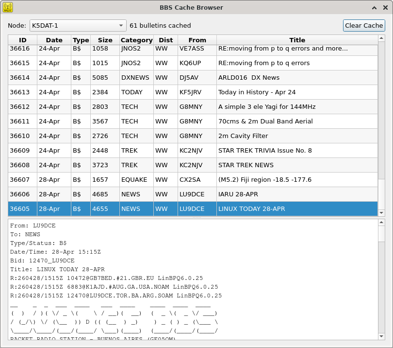

Qu'est-ce qu'un BBS packet ?
Un BBS (Bulletin Board System) packet est un serveur de messagerie à relayage fonctionnant via radio amateur. Les opérateurs s'y connectent pour envoyer et recevoir des messages, relayer du trafic et coordonner lors d'activations d'urgence. Sur les bandes HF, les stations BBS sont accessibles bien au-delà de votre région — à travers les provinces, les pays, parfois les continents.
Sur VHF ou UHF, vous connaissez déjà votre BBS local et il est à portée facile. En HF, c'est une autre histoire : les stations apparaissent sur de nombreuses bandes et fréquences, les heures d'activité varient, et trouver un BBS actif demande de savoir où chercher. LiaisonOS règle ce problème avec le Répertoire BBS intégré, orienté spécifiquement vers l'exploitation BBS HF.
Le Répertoire BBS
Le Répertoire BBS est une liste curatée et maintenue par la communauté, distribuée avec LiaisonOS. Chaque entrée contient tout ce dont vous avez besoin pour établir le contact :
QSY automatique à la sélection
C'est là que le Répertoire BBS devient un véritable outil d'exploitation. Lorsque vous sélectionnez une station dans le répertoire et cliquez sur Connecter, LiaisonOS accorde automatiquement votre radio à la fréquence de cette station avant d'ouvrir la session terminal. Pas besoin de toucher à l'appareil — sélectionnez, cliquez, et vous êtes sur la fréquence.
Cela fonctionne avec n'importe quelle radio compatible CAT configurée dans LiaisonOS. Le mode correct (USB, FM, etc.) est réglé en même temps que la fréquence.
Mise à jour du répertoire en ligne
Le répertoire BBS principal est hébergé en ligne et mis à jour au fil des ajouts ou modifications de stations. Cliquer sur Actualiser en ligne télécharge la liste la plus récente et la fusionne avec vos entrées locales — vos stations locales sont toujours préservées, et toute station marquée locale n'est jamais touchée lors de la fusion.
En déploiement terrain sans internet, le dernier répertoire téléchargé est toujours disponible localement. Vous n'avez jamais besoin de connectivité pour utiliser le répertoire une fois synchronisé.

Le Cache BBS
Lorsque vous vous connectez à un BBS via QtTermTCP dans LiaisonOS, la liste des bulletins et les bulletins eux-mêmes sont automatiquement sauvegardés dans le Cache BBS — une base de données SQLite locale. Vous pouvez ainsi lire les bulletins après la déconnexion, même si vous n'êtes plus à portée radio.
Le cache est consultable et organisé par station et par date. Lors d'une activation d'urgence, c'est une ressource précieuse : bulletins entrants, listes d'abris, demandes de ressources — tout est sauvegardé et lisible à tout moment après la session.
Comment ils fonctionnent ensemble
- Ouvrez le Répertoire BBS depuis le tableau de bord LiaisonOS.
- Trouvez la station souhaitée — recherchez par indicatif, localisation ou locator.
- Sélectionnez la station et choisissez une fréquence si plusieurs bandes sont disponibles.
- Cliquez sur Connecter — votre radio fait un QSY automatique et la session terminal s'ouvre.
- Travaillez le BBS normalement. À la déconnexion, la session est sauvegardée dans le Cache BBS.
- Consultez les bulletins mis en cache à tout moment depuis le visualiseur de cache — sans transmission requise.
Disponible dans LiaisonOS 2.2.4 et versions ultérieures · Fonctionnalité développée par VA2OPS